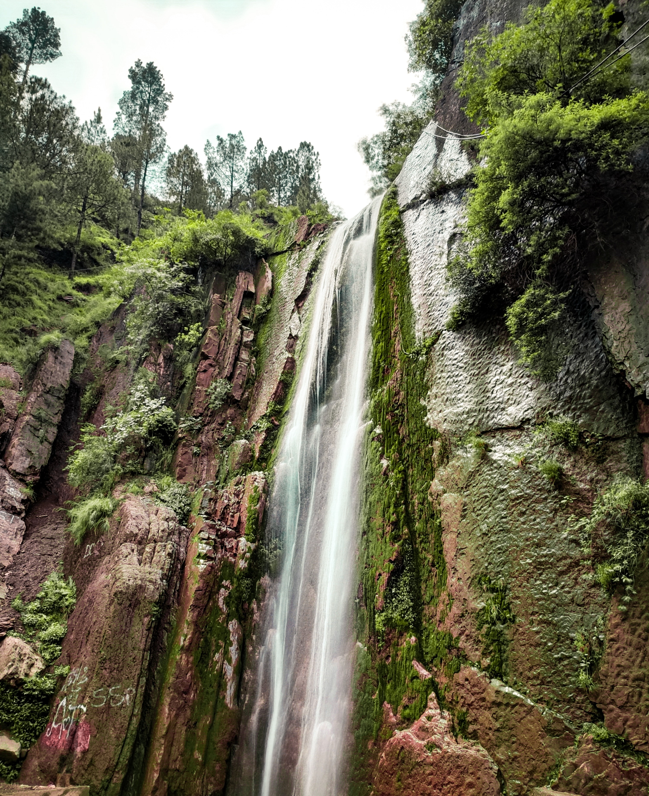
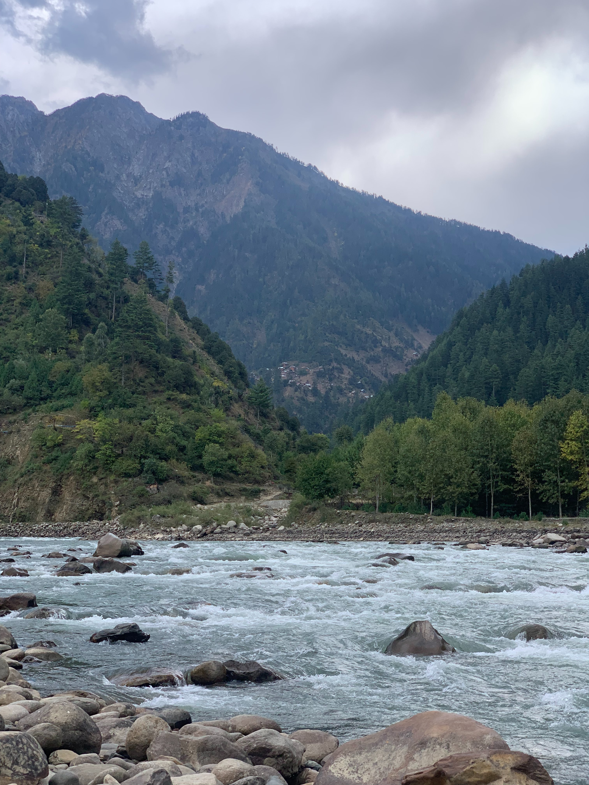

Saiful Muluk Lake
 The lake is the crown of the head of Pakistani beauty. It’s located in Mansehra District, Khyber Pakhtunkhwa
near the Naran town and on the end of Kaghan valley.
The Lake is named after the famous tale of love of a Persian prince Saif Ul Muluk with a fairy princess
Badri Jamala, written by a Sufi poet Mian Muhammad Bakhsh.
The breathtaking view of high glacier mountains and rich green slopes also reflects green-blue shadows in
the water.
The lake is the crown of the head of Pakistani beauty. It’s located in Mansehra District, Khyber Pakhtunkhwa
near the Naran town and on the end of Kaghan valley.
The Lake is named after the famous tale of love of a Persian prince Saif Ul Muluk with a fairy princess
Badri Jamala, written by a Sufi poet Mian Muhammad Bakhsh.
The breathtaking view of high glacier mountains and rich green slopes also reflects green-blue shadows in
the water.
Lulusar Lake

Might be; you’ve listened about this distinct lake for the very first time. It’s located 350 km from
Mansehra, at the height of 3353 meters at Raran Chilas Road.
In fact, it’s a conjunction point of various lakes. It’s surrounded icy valleys which reflects a shadow and
looks stunning. One of the most attractive lakes of the region.
Dudipatsar Lake
 Another symbol of beauty, the Dudipatsar Lake is located at the height of 417 km in the northern side of
Kaghan Valley. It can be accessed by traveling for 4 hours ahead from Jalkhad (locality of Kaghan Valley).
It’s name has a local meaning of Lake of Milk because of the rich white color of water. Although, water has
it’s natural blue color but the reflection of ice covered mountains cause a depiction of milky water effect.
Another symbol of beauty, the Dudipatsar Lake is located at the height of 417 km in the northern side of
Kaghan Valley. It can be accessed by traveling for 4 hours ahead from Jalkhad (locality of Kaghan Valley).
It’s name has a local meaning of Lake of Milk because of the rich white color of water. Although, water has
it’s natural blue color but the reflection of ice covered mountains cause a depiction of milky water effect.
Payee Lake
 Having an incredibly attractive view, Payee Lake exists under the greenish meadows of Payee nearby the Shogren in Kaghan valley. Its altitude is almost 9500 feet. The Lake is known as one of the most spectacular lakes of the country as it’s surrounded by the peak of Makrda, Malka-e-Parbat, Mosy Damsli (most beautiful & high peaks) and the mountain os Kashmir. Stunning coverage of meadows around Paaye depicts it as a scene of the imaginary world.
Having an incredibly attractive view, Payee Lake exists under the greenish meadows of Payee nearby the Shogren in Kaghan valley. Its altitude is almost 9500 feet. The Lake is known as one of the most spectacular lakes of the country as it’s surrounded by the peak of Makrda, Malka-e-Parbat, Mosy Damsli (most beautiful & high peaks) and the mountain os Kashmir. Stunning coverage of meadows around Paaye depicts it as a scene of the imaginary world.
Siri Lake
 Near Shogren in Kaghan valley, Siri Lake is situated having a height of 8500 feet which is less than the altitude of Paaye valley. Although, it’s small and seems like a pool the have given it an adorable outline which stimulates the tourist to approach.
Near Shogren in Kaghan valley, Siri Lake is situated having a height of 8500 feet which is less than the altitude of Paaye valley. Although, it’s small and seems like a pool the have given it an adorable outline which stimulates the tourist to approach.
Kachura Lake

This lake has crystal clear water which is approximately 70 meters deep. Nearby the lake, Indus river flows bit deeper than it. In summer, the temperature lies between 10 to 15 °C, whereas it falls quite below the freezing point (zero °C) in winters. You can ever experience this lake as the coldest destination if you have got a plan to explore it in frosty season